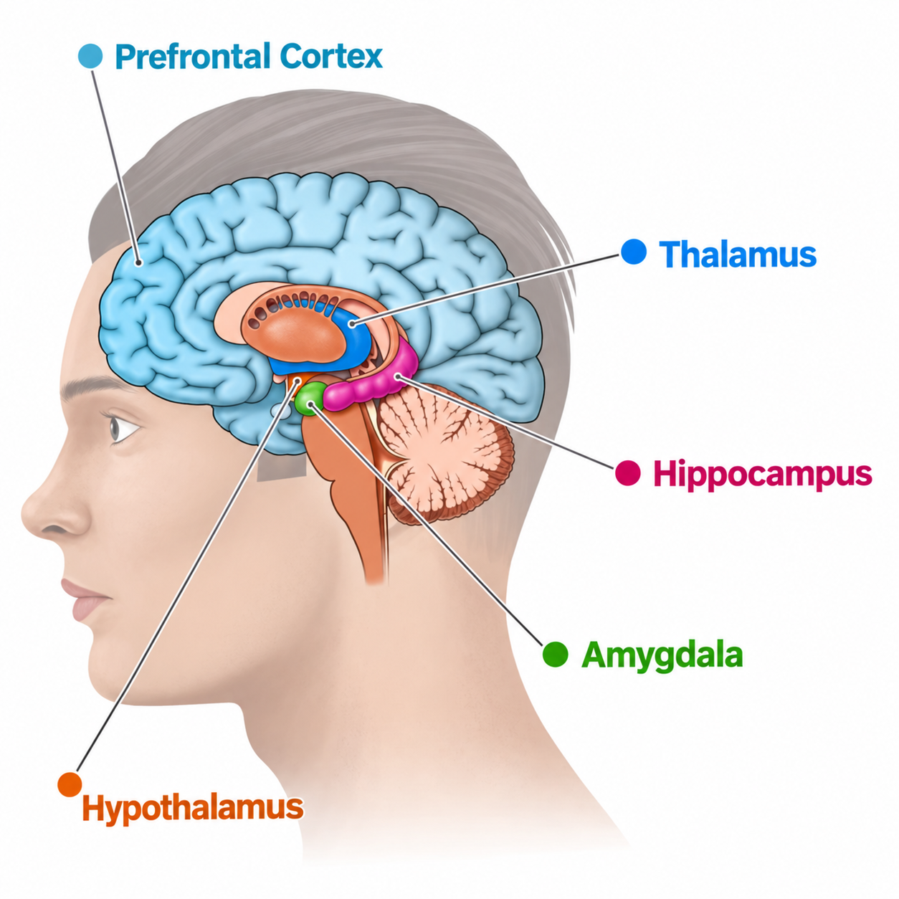

Beneath the cerebral cortex
Subcortical Areas
Subcortical areas lie beneath the cerebral cortex. The four structures in this guide help process sensory information, maintain internal balance, shape emotional responses, and form memories.

Key Structures
Four areasThalamus
Location: Deep near the center of the forebrain.
Main roles: Relays and processes most sensory information before it reaches the cerebral cortex and contributes to attention.
Hypothalamus
Location: Below the thalamus.
Main roles: Maintains homeostasis by helping regulate hunger, thirst, body temperature, stress, and hormone activity.
Amygdala
Location: Deep within the temporal region, near the front of the hippocampus.
Main roles: Evaluates emotional significance, supports fear learning, and helps attach emotion to memories.
Hippocampus
Location: Deep within the temporal region.
Main roles: Helps form new explicit memories and supports learning and spatial navigation.
Sources
OpenStax Psychology 2e — The Brain and Spinal Cord · OpenStax Anatomy and Physiology 2e — The Central Nervous System